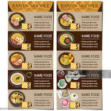
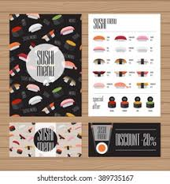
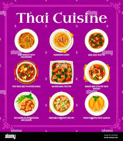

View Menus & Prices Before Ordering
Preview current menus with dish names, descriptions, dietary tags, and exact prices—no guesses or hidden costs.
Sections like Best-sellers, Chef’s picks, and Vegetarian options make long menus easy to skim. Icons indicate 🌶️ spicy, GF gluten-free, and V vegan.
Plan to your budget, check allergens, and decide confidently before you go or order.
Today’s menu highlights


